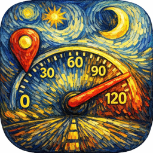

VelociTrack
GPS lap timer, speedometer & G-force meter
Get help
Email kyleb182610@gmail.com and include your iPhone model and iOS version. I usually reply within a few days.
Frequently asked questions
Why does the speed stay at 0?
VelociTrack measures speed with GPS, so it needs a clear view of the sky and some movement. Indoors, or with Location turned off, the speed stays at 0. Check Settings → Privacy & Security → Location Services → VelociTrack and choose "While Using the App".
Will it keep recording if I lock my phone?
Yes. Once you tap START, VelociTrack keeps recording with the screen off or while you use another app. iOS shows the location indicator, and the Live Activity shows your speed on the Lock Screen and Dynamic Island. When you're done, tap PAUSE, then Save Session. When you aren't recording, the app doesn't use location in the background.
How do I time laps?
Open the Timer tab, choose Lap Timer, and tap "Set Finish Line at Current Location" (or pick a saved track). You can add sectors at points along the lap to get split times and a theoretical best lap.
How do I get the G-force meter to read correctly?
Mount the phone firmly before you start. The meter learns how the phone sits in the car during the first moments of driving, so readings settle after a short stretch of straight-line acceleration and braking.
How do I back up or move my data?
In Settings → Data, "Back Up All Data" saves a full .velotrack backup you can keep in Files, AirDrop or email, and "Restore from Backup" loads it on another iPhone. With "Auto-Save Backup to Files" on (the default), recent backups also appear in the Files app under On My iPhone → VelociTrack. Individual sessions can be exported as GPX or CSV from a session's ⋯ menu.
Does VelociTrack collect my data?
No. Everything stays on your iPhone. See the Privacy Policy.
Drive safely
Mount your phone before you drive and don't interact with it while moving. Lap timing and speed runs are for closed courses. Always obey traffic laws.